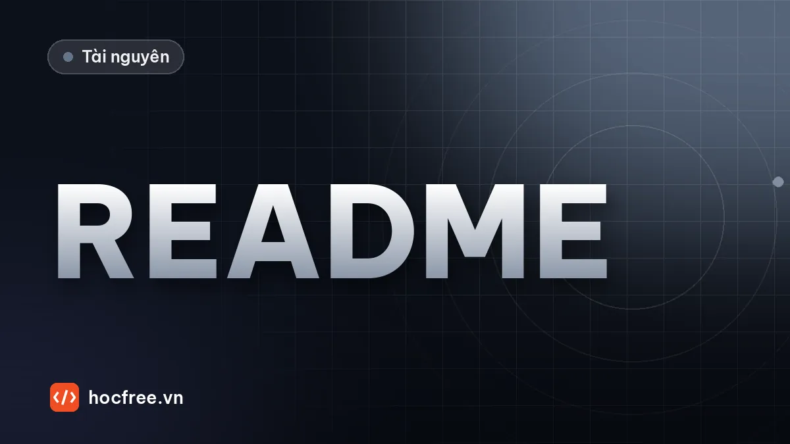

Viết tài liệu dự án Vision: README, đặc tả, SOP, phiên bản mô hình
README, đặc tả đo được, SOP cho người vận hành, hướng dẫn bảo trì, model card, changelog theo SemVer và checklist bàn giao, kèm script kiểm tra tài liệu.

Học xong bài này, bạn sẽ
- Viết README, đặc tả, hướng dẫn vận hành
- Ghi lại phiên bản mô hình và cấu hình
- Bàn giao cho người khác bảo trì
Nên học trước: Capstone 3: kiểm tra lỗi bề mặt bằng AI, trả kết quả PLC
Nội dung bài viết
- 1. Bộ tài liệu của một dự án vision: ai đọc, đọc khi nào
- 2. README: kỹ sư mới chạy được hệ thống trong 30 phút
- 3. Đặc tả yêu cầu: đo được, thử được, không cãi nhau
- 4. Hướng dẫn vận hành (SOP): viết cho người đứng máy
- 5. Hướng dẫn bảo trì: để người khác sửa được trạm
- 6. Quản lý phiên bản: phần mềm, mô hình, cấu hình
- 7. Sinh khung tài liệu và kiểm tra README bằng script
- 8. Bàn giao: để người khác bảo trì được
- 9. Bài tập
- Tóm tắt
Ba capstone vừa rồi (trạm đo kích thước, trạm đọc DataMatrix và số seri, trạm kiểm tra lỗi bề mặt bằng AI) đã cho bạn những hệ thống chạy được và có biên bản nghiệm thu. Nhưng một trạm vision chỉ thực sự "xong" khi người khác vận hành, sửa chữa và nâng cấp được nó mà không cần gọi bạn lúc 2 giờ sáng. Ở nhà máy, người đọc tài liệu rất khác nhau: công nhân vận hành cần biết bấm gì khi đèn đỏ sáng, kỹ thuật viên bảo trì cần biết lau ống kính thế nào và hiệu chuẩn lại ra sao, kỹ sư kế nhiệm cần biết mô hình nào đang chạy, huấn luyện từ dữ liệu nào, ngưỡng đặt bao nhiêu và vì sao. Bài này trình bày bộ tài liệu tối thiểu cho một dự án vision, mẫu cho từng loại, cách quản lý phiên bản mô hình và cấu hình, danh sách bàn giao, cùng vài script Python nhỏ giúp tài liệu không bị bỏ quên. Bài tiếp theo "Xây portfolio để ứng tuyển Vision Engineer" sẽ dùng chính các README này để thuyết phục nhà tuyển dụng.
1. Bộ tài liệu của một dự án vision: ai đọc, đọc khi nào
| Tài liệu | Người đọc | Trả lời câu hỏi | Cập nhật khi |
|---|---|---|---|
| README | Kỹ sư (bạn sau 6 tháng, đồng nghiệp) | Hệ thống làm gì, cài và chạy thế nào, code nằm đâu | Mỗi lần đổi cách cài/chạy |
| Đặc tả yêu cầu (specification) | Khách hàng, QA, quản lý dự án | Phải đạt gì, đo bằng gì, cái gì ngoài phạm vi | Khi yêu cầu thay đổi (có duyệt) |
| Hướng dẫn vận hành (SOP) | Công nhân vận hành, trưởng ca | Khởi động, kiểm tra đầu ca, đổi mã hàng, xử lý báo lỗi | Khi giao diện hoặc quy trình đổi |
| Hướng dẫn bảo trì | Kỹ thuật viên bảo trì, kỹ sư hiện trường | Vệ sinh, thay camera/đèn, hiệu chuẩn lại, sao lưu, khắc phục sự cố | Sau mỗi sự cố có bài học |
| Model card | Kỹ sư AI, QA | Mô hình học từ dữ liệu nào, ngưỡng, kết quả, giới hạn đã biết | Mỗi phiên bản mô hình |
| Changelog | Mọi người | Bản nào đang chạy, khác bản trước ở đâu | Mỗi lần phát hành |
| Biên bản nghiệm thu | Khách hàng, QA | Đã chứng minh đạt yêu cầu bằng số liệu nào | FAT/SAT, sau thay đổi lớn |
Nguyên tắc chung: một tài liệu, một người đọc. SOP viết cho kỹ sư sẽ không ai trong xưởng đọc; README viết cho công nhân sẽ thiếu thông tin cho kỹ sư. Tài liệu kỹ thuật nằm cạnh mã nguồn (thư mục docs/, định dạng Markdown, quản lý bằng git cùng code); SOP cho xưởng thường in ra, ép plastic, dán cạnh trạm, kèm bản PDF có số phiên bản.
2. README: kỹ sư mới chạy được hệ thống trong 30 phút
Tiêu chí kiểm tra README rất đơn giản: đưa cho một kỹ sư chưa biết dự án, máy sạch, họ có chạy được phần mềm (ít nhất ở chế độ mô phỏng) trong 30 phút không? Mẫu README cho một trạm vision:
# Trạm kiểm tra lỗi bề mặt nắp nhôm – Line 3
Kiểm tra xước/đốm trên nắp nhôm xước sợi, 30 nắp/phút, trả OK/NG cho PLC qua Modbus TCP.
Phiên bản phần mềm 1.3.0 · mô hình surface_cnn 2.1.0 · cấu hình line3.toml rev 7
## Mục đích và phạm vi
- Phát hiện: xước dài ≥ 0,5 mm, đốm ≥ 0,3 mm trên mặt trên của nắp.
- KHÔNG kiểm tra: mặt bên, ren, màu anod (xem SPEC.md mục 2.3).
## Kết quả nghiệm thu (SAT 2026-09-20, xem docs/bien_ban_SAT.pdf)
| Chỉ số | Yêu cầu | Đạt |
|---|---|---|
| Escape (lọt lỗi) | 0 / 300 nắp NG | 0 |
| Overkill (loại nhầm) | ≤ 2 % | 1,9 % |
| Thời gian xử lý p99 | ≤ 50 ms | 31 ms |
## Phần cứng
- Camera 5 MP mono GigE, IP 192.168.10.11; ống kính 25 mm, f/5.6
- Đèn vòm (dome) trắng + bộ điều khiển strobe; PC công nghiệp Linux, 8 lõi
- PLC: IP 192.168.10.1, Modbus TCP cổng 502 (bảng địa chỉ: docs/PLC_MAP.md)
## Cài đặt
1. Cài SDK camera theo docs/MAINTENANCE.md mục 1
2. `python -m venv .venv && source .venv/bin/activate`
3. `pip install -r requirements.txt`
## Chạy
- Mô phỏng (không cần camera/PLC): `python -m tram --config config/sim.toml`
- Trên trạm: dịch vụ `tram-vision` (systemd), xem docs/SOP.md
## Cấu hình
`config/line3.toml`: ngưỡng, ROI, địa chỉ PLC. Đổi cấu hình → tăng rev, ghi CHANGELOG.md.
## Cấu trúc thư mục
src/ config/ models/ tests/ docs/ tools/
## Tài liệu khác
SPEC.md · docs/SOP.md · docs/MAINTENANCE.md · models/MODEL_CARD.md · CHANGELOG.md
## Liên hệ
Bộ phận Kỹ thuật tự động hóa – người phụ trách hiện tại ghi trong docs/HANDOVER.mdNhững điểm đáng học trong mẫu: dòng đầu nói bài toán bằng con số (30 nắp/phút, OK/NG, Modbus TCP); dòng phiên bản cho biết ba thứ đang chạy (phần mềm, mô hình, cấu hình); phạm vi nói rõ cả điều không làm; kết quả nghiệm thu là bảng có yêu cầu và giá trị đạt; có đường chạy mô phỏng để người mới thử mà không cần trạm thật. Số liệu trong mẫu là ví dụ: thay bằng số trong biên bản của bạn.
3. Đặc tả yêu cầu: đo được, thử được, không cãi nhau
Đặc tả (specification, SPEC) là "hợp đồng kỹ thuật" giữa bạn và khách hàng. Tranh cãi lúc nghiệm thu gần như luôn đến từ câu chữ mơ hồ. Ba quy tắc:
- Từ khóa mức độ: "phải" (shall) là bắt buộc, kiểm tra khi nghiệm thu; "nên" (should) là mong muốn; "có thể" (may) là tùy chọn. Không dùng "cố gắng", "tốt", "nhanh".
- Mỗi yêu cầu có mã, tiêu chí bằng số và cách thử, đúng như bảng R1, R2… trong các capstone.
- Ghi rõ ngoài phạm vi và giả định: lỗi nào không kiểm tra, điều kiện ánh sáng, tốc độ băng tải, vật liệu nào đã thử.
| Câu mơ hồ | Viết lại đo được |
|---|---|
| Hệ thống phát hiện tốt các vết xước | R2: Hệ thống phải phát hiện 100% vết xước dài ≥ 0,5 mm trên bộ 300 nắp NG chuẩn (escape = 0) |
| Ít loại nhầm | R3: Tỉ lệ loại nhầm phải ≤ 2% trên 1000 nắp OK của 2 lô vật liệu khác nhau |
| Chạy đủ nhanh | R5: Thời gian từ trigger tới khi PLC nhận kết quả phải có p99 ≤ 300 ms, đo trên 2000 chu kỳ liên tục |
| Đo chính xác | R2 (đo): %GRR thành phần lặp lại ≤ 10% dung sai; |bias| so với CMM ≤ 10% dung sai |
Khung một đặc tả 2–4 trang: 1. Mục đích; 2. Phạm vi (sản phẩm, loại lỗi, ngoài phạm vi); 3. Điều kiện vận hành (tốc độ, môi trường, ánh sáng xung quanh); 4. Bảng yêu cầu (mã, nội dung, tiêu chí, cách thử); 5. Giao tiếp (bảng tín hiệu PLC, dữ liệu gửi MES); 6. Dữ liệu và truy vết (lưu gì, bao lâu); 7. Giả định và rủi ro; 8. Lịch sử phiên bản đặc tả.
4. Hướng dẫn vận hành (SOP): viết cho người đứng máy
SOP (Standard Operating Procedure) dành cho công nhân và trưởng ca. Họ không cần biết CNN là gì; họ cần biết làm gì, theo thứ tự nào, khi thấy gì. Quy tắc viết: câu ngắn bắt đầu bằng động từ; mỗi bước một hành động, đánh số; ảnh chụp màn hình và ảnh thật của trạm; tên nút, tên đèn đúng như trên máy; mỗi báo lỗi có hành động cụ thể và người cần gọi.
SOP-VIS-03 Kiểm tra đầu ca – Trạm nắp nhôm Line 3 Phiên bản 2 · 2026-10-01
──────────────────────────────────────────────────────────────────────────────────
1. Kiểm tra đèn tháp: XANH = sẵn sàng. Nếu VÀNG hoặc ĐỎ: sang bảng xử lý báo lỗi.
2. Lấy hộp MẪU CHUẨN (tủ cạnh trạm, nhãn "MC-L3"): 2 nắp OK, 2 nắp NG.
3. Bấm nút "KIỂM TRA MẪU" trên màn hình.
4. Đặt lần lượt 4 nắp lên băng tải, đúng chiều mũi tên.
5. Màn hình phải hiện: OK, OK, NG, NG (đúng thứ tự trên nhãn).
6. Đúng cả 4: ký sổ đầu ca, bấm "BẮT ĐẦU SẢN XUẤT".
Sai bất kỳ nắp nào: KHÔNG chạy sản xuất. Gọi kỹ thuật Vision (máy lẻ 214).| Báo lỗi trên màn hình | Ý nghĩa | Người vận hành làm | Gọi ai |
|---|---|---|---|
| E01 Mất camera | Không nhận được ảnh | Kiểm tra đèn LINK trên camera; bấm "KẾT NỐI LẠI" một lần | Kỹ thuật Vision nếu còn lỗi |
| E04 Ảnh quá tối | Độ sáng vùng tham chiếu ngoài dải | Kiểm tra đèn vòm có sáng; lau kính bảo vệ bằng khăn trong hộp | Bảo trì nếu đèn tắt |
| NG liên tiếp ≥ 5 nắp | Lỗi hàng loạt hoặc trạm lỗi | Dừng băng tải, lấy 2 nắp NG đưa trưởng ca kiểm tra bằng mắt | Trưởng ca + QA |
| E09 Mô hình không hợp lệ | File mô hình sai mã băm | Không tự xử lý | Kỹ thuật Vision ngay |
Hãy thử SOP với một công nhân thật, đứng cạnh nhìn họ làm mà không giải thích. Mỗi chỗ họ hỏi lại là một chỗ phải sửa.
5. Hướng dẫn bảo trì: để người khác sửa được trạm
- Lịch bảo trì định kỳ: lau kính bảo vệ (hằng ca hoặc hằng ngày, tùy bụi), kiểm tra đèn và cáp (hằng tuần), kiểm tra hiệu chuẩn bằng mẫu chuẩn (hằng ca), sao lưu dữ liệu (hằng tuần).
- Quy trình thay thế: thay camera, ống kính, đèn; sau mỗi lần thay phải làm gì (đặt lại khẩu độ, lấy nét, hiệu chuẩn mm/px, chạy bộ mẫu vàng). Ghi rõ thông số cơ khí: khoảng cách làm việc, vị trí khóa vòng nét, ảnh chụp vị trí lắp.
- Sao lưu và khôi phục: những file nào (cấu hình, mô hình kèm thẻ mô hình, hệ số hiệu chuẩn, CSDL kết quả), ở đâu, lệnh khôi phục.
- Khắc phục sự cố: bảng triệu chứng → nguyên nhân → cách kiểm tra → cách sửa; vị trí file log và cách đọc.
- Phụ tùng: mã phụ tùng, nhà cung cấp, thời gian giao hàng; phụ tùng nào nên có sẵn trong kho (camera dự phòng, cáp, đèn).
6. Quản lý phiên bản: phần mềm, mô hình, cấu hình
Ở trạm AI vision, kết quả OK/NG phụ thuộc vào ba thứ thay đổi độc lập: mã nguồn, mô hình, và cấu hình (ngưỡng, ROI, hệ số hiệu chuẩn). Mỗi thứ cần số phiên bản riêng, và mỗi bản ghi kết quả trong CSDL nên lưu cả ba, để khi QA hỏi "nắp lô 2610 bị loại ngày 12 chạy bằng gì?" bạn trả lời được.
Semantic versioning (SemVer) đặt phiên bản dạng MAJOR.MINOR.PATCH. Áp vào trạm vision:
| Tăng | Khi nào (phần mềm trạm) | Ví dụ |
|---|---|---|
| MAJOR (2.0.0) | Thay đổi không tương thích ngược: bảng địa chỉ PLC, định dạng dữ liệu gửi MES, cấu trúc file cấu hình | Thêm thanh ghi mã lỗi làm dịch địa chỉ cũ; PLC phải sửa theo |
| MINOR (1.4.0) | Thêm tính năng tương thích ngược; mô hình mới thay đổi quyết định | Thêm cảnh báo drift; dùng mô hình 2.1.0 |
| PATCH (1.3.1) | Sửa lỗi không đổi hành vi mong đợi | Sửa rò bộ nhớ khi mất camera |
Mô hình có số phiên bản riêng (surface_cnn 2.1.0), gắn với: phiên bản dataset, mã băm SHA-256 của file ONNX, ngưỡng, và kết quả kiểm định. Đổi trọng số luôn là phiên bản mới và phải chạy lại bộ kiểm định; không có chuyện "chép đè file model.onnx". Cấu hình dùng số rev đơn giản (rev 7, rev 8) cộng changelog, vì thay đổi ngưỡng cũng làm đổi quyết định.
Model card (thẻ mô hình) là một trang mô tả mô hình, đi cùng file ONNX. Mẫu tối thiểu, dạng JSON như bài "Xuất ONNX và kiểm tra kết quả khớp PyTorch" hoặc Markdown:
# MODEL_CARD – surface_cnn 2.1.0
- File: surface_cnn_2.1.0.onnx · SHA-256: 9f2c…e41a · opset 18 · đầu vào images [N,3,128,128] float32
- Tiền xử lý: crop ô 128×128, BGR→RGB, /255, mean/std ImageNet (R,G,B)
- Dữ liệu: dataset v4 (lô 2601–2614, 12 400 ô OK, 1 870 ô NG); val: lô 2615–2616; test: lô 2617–2618
- Ngưỡng: 0,31, chọn trên val sao cho escape = 0 với biên an toàn
- Kết quả test: escape 0/412 ô NG; overkill 1,9 % ô OK; p99 31 ms/nắp trên PC trạm
- Giới hạn đã biết: xước song song vân xước sợi dưới 0,5 mm khó thấy; chưa thử nắp màu đen
- Huấn luyện lại khi: đổi nhà cung cấp phôi, đổi đèn/camera, overkill tuần > 3 %Changelog ghi theo phiên bản, mới nhất ở trên, nhóm theo loại thay đổi, có số liệu khi thay đổi ảnh hưởng chất lượng. Thay vì viết tay, giữ danh sách phát hành ở dạng dữ liệu (JSON) và sinh changelog bằng script; script đồng thời kiểm tra phiên bản tăng đúng SemVer và ngày tháng theo thứ tự:
import json
from pathlib import Path
def tach(v):
return tuple(int(x) for x in v.split("."))
def tang(v, loai):
"""Phiên bản kế tiếp theo SemVer: loai là 'major', 'minor' hoặc 'patch'."""
ma, mi, pa = tach(v)
return {"major": f"{ma + 1}.0.0", "minor": f"{ma}.{mi + 1}.0", "patch": f"{ma}.{mi}.{pa + 1}"}[loai]
def sinh_changelog(ds):
"""ds: danh sách bản phát hành, cũ -> mới. Trả về (markdown, danh sách lỗi)."""
loi = []
for truoc, sau in zip(ds, ds[1:]):
if tang(truoc["version"], sau["loai"]) != sau["version"]:
loi.append(f"{sau['version']}: '{sau['loai']}' sau {truoc['version']} phải là "
f"{tang(truoc['version'], sau['loai'])}")
if sau["date"] < truoc["date"]:
loi.append(f"{sau['version']}: ngày {sau['date']} trước bản {truoc['version']}")
dong = ["# Changelog", ""]
for b in reversed(ds): # mới nhất ở trên
dong.append(f"## {b['version']} – {b['date']}")
if b.get("model"):
dong.append(f"Mô hình: {b['model']} · Cấu hình: {b['config']}")
for nhom in ("Thêm", "Thay đổi", "Sửa lỗi"):
for muc in b.get(nhom, []):
dong.append(f"- **{nhom}**: {muc}")
dong.append("")
return "\n".join(dong), loi
phat_hanh = [
{"version": "1.2.0", "loai": "minor", "date": "2026-08-14", "model": "surface_cnn 1.4.0",
"config": "rev 5", "Thêm": ["Lưu ảnh NG kèm điểm vào tên file"]},
{"version": "1.2.1", "loai": "patch", "date": "2026-08-30", "model": "surface_cnn 1.4.0",
"config": "rev 5", "Sửa lỗi": ["Rò bộ nhớ khi camera mất kết nối (E01) nhiều lần"]},
{"version": "1.3.0", "loai": "minor", "date": "2026-10-05", "model": "surface_cnn 2.1.0",
"config": "rev 7",
"Thêm": ["Cảnh báo drift độ nét (EWMA), hiện E04 trên màn hình"],
"Thay đổi": ["Mô hình 2.1.0 (dataset v4, +600 ảnh ca đêm): overkill 2,1 % → 1,9 % trên 1000 nắp, escape 0/300",
"Ngưỡng 0,35 → 0,31 (rev 7), chọn lại trên tập val mới"]},
]
md, loi = sinh_changelog(phat_hanh)
Path("CHANGELOG.md").write_text(md, encoding="utf-8")
print(md)
print("Lỗi:", loi or "không")
sai = phat_hanh + [{"version": "1.5.0", "loai": "minor", "date": "2026-09-01", "Sửa lỗi": ["..."]}]
print("Lỗi khi thêm bản 1.5.0:", sinh_changelog(sai)[1])
print("Thay bảng địa chỉ PLC sau 1.3.0 →", tang("1.3.0", "major"))# Changelog
## 1.3.0 – 2026-10-05
Mô hình: surface_cnn 2.1.0 · Cấu hình: rev 7
- **Thêm**: Cảnh báo drift độ nét (EWMA), hiện E04 trên màn hình
- **Thay đổi**: Mô hình 2.1.0 (dataset v4, +600 ảnh ca đêm): overkill 2,1 % → 1,9 % trên 1000 nắp, escape 0/300
- **Thay đổi**: Ngưỡng 0,35 → 0,31 (rev 7), chọn lại trên tập val mới
## 1.2.1 – 2026-08-30
Mô hình: surface_cnn 1.4.0 · Cấu hình: rev 5
- **Sửa lỗi**: Rò bộ nhớ khi camera mất kết nối (E01) nhiều lần
## 1.2.0 – 2026-08-14
Mô hình: surface_cnn 1.4.0 · Cấu hình: rev 5
- **Thêm**: Lưu ảnh NG kèm điểm vào tên file
Lỗi: không
Lỗi khi thêm bản 1.5.0: ["1.5.0: 'minor' sau 1.3.0 phải là 1.4.0", '1.5.0: ngày 2026-09-01 trước bản 1.3.0']
Thay bảng địa chỉ PLC sau 1.3.0 → 2.0.0Bản 1.5.0 bị bắt hai lỗi: nhảy cóc qua 1.4.0, và ngày phát hành sớm hơn bản trước (thường do chép nhầm). Trong dự án thật, chạy script này trong CI hoặc trước mỗi lần phát hành; số phiên bản trong changelog phải khớp số phiên bản phần mềm in ra lúc khởi động.
7. Sinh khung tài liệu và kiểm tra README bằng script
Tài liệu hay bị bỏ vì bắt đầu từ trang trắng. Script sau tạo khung docs/ với các mục bắt buộc cho từng tài liệu; bạn chỉ việc điền. Mục nào chưa điền giữ chữ TODO để script kiểm tra phát hiện:
KHUNG = {
"README.md": ["Mục đích và phạm vi", "Kết quả nghiệm thu", "Phần cứng", "Cài đặt", "Chạy",
"Cấu hình", "Cấu trúc thư mục", "Tài liệu khác", "Liên hệ"],
"SPEC.md": ["Mục đích", "Phạm vi", "Điều kiện vận hành", "Bảng yêu cầu", "Giao tiếp PLC/MES",
"Dữ liệu và truy vết", "Giả định và rủi ro", "Lịch sử phiên bản"],
"docs/SOP.md": ["Khởi động và tắt", "Kiểm tra đầu ca", "Đổi mã sản phẩm", "Xử lý báo lỗi"],
"docs/MAINTENANCE.md": ["Lịch bảo trì", "Thay thế linh kiện", "Hiệu chuẩn lại",
"Sao lưu và khôi phục", "Khắc phục sự cố", "Phụ tùng"],
"models/MODEL_CARD.md": ["File và mã băm", "Tiền xử lý", "Dữ liệu", "Ngưỡng", "Kết quả", "Giới hạn"],
"docs/HANDOVER.md": ["Người bàn giao và nhận", "Tài khoản và quyền truy cập", "Vấn đề còn mở"],
}
def tao_khung(goc, ten_du_an):
goc = Path(goc)
for ten, muc in KHUNG.items():
p = goc / ten
if p.exists(): # không ghi đè tài liệu đã viết
continue
p.parent.mkdir(parents=True, exist_ok=True)
tieu_de = ten.split("/")[-1].removesuffix(".md")
noi_dung = [f"# {tieu_de} – {ten_du_an}", ""] + [f"## {m}\n\nTODO\n" for m in muc]
p.write_text("\n".join(noi_dung), encoding="utf-8")
return sorted(str(p.relative_to(goc)) for p in goc.rglob("*.md"))
print(tao_khung("du_an_nap_nhom", "Trạm nắp nhôm Line 3"))
print("\n".join(Path("du_an_nap_nhom/docs/SOP.md").read_text(encoding="utf-8").splitlines()[:5]))['README.md', 'SPEC.md', 'docs/HANDOVER.md', 'docs/MAINTENANCE.md', 'docs/SOP.md', 'models/MODEL_CARD.md']
# SOP – Trạm nắp nhôm Line 3
## Khởi động và tắt
TODOHàm kiểm tra README: đủ mục bắt buộc, không còn TODO, có dòng phiên bản, có số liệu kết quả, mọi file được nhắc tới (ảnh, tài liệu khác) tồn tại, và không có dấu hiệu mật khẩu:
import re
def kiem_tra_readme(duong_dan, muc_bat_buoc=KHUNG["README.md"]):
p = Path(duong_dan)
van_ban = p.read_text(encoding="utf-8")
muc = {m.strip() for m in re.findall(r"^##\s+(.+)$", van_ban, re.M)}
loi = [f"thiếu mục '{m}'" for m in muc_bat_buoc if m not in muc]
if "TODO" in van_ban:
loi.append(f"còn {van_ban.count('TODO')} chỗ TODO")
if not re.search(r"[Pp]hiên bản.*\d+\.\d+\.\d+", van_ban):
loi.append("không có dòng phiên bản dạng X.Y.Z")
if not re.search(r"\d+(,\d+)?\s*(%|ms|mm|µm)", van_ban):
loi.append("không có số liệu kết quả (%, ms, mm…)")
for f in re.findall(r"(?:docs|models)/[\w./-]+\.(?:md|pdf|png|gif|jpg)", van_ban):
if not (p.parent / f).exists():
loi.append(f"nhắc tới {f} nhưng file không tồn tại")
if re.search(r"(password|mật khẩu|passwd)\s*[:=]\s*\S+", van_ban, re.I):
loi.append("có vẻ chứa mật khẩu")
return loi
print("Khung mới tạo:", kiem_tra_readme("du_an_nap_nhom/README.md"))Khung mới tạo: ['còn 9 chỗ TODO', 'không có dòng phiên bản dạng X.Y.Z', 'không có số liệu kết quả (%, ms, mm…)']Kết quả đúng như mong đợi với khung chưa điền: có đủ mục nhưng còn TODO, chưa có phiên bản, chưa có số liệu. Bài tập 1 dùng hàm này để chấm README bạn viết cho capstone.
8. Bàn giao: để người khác bảo trì được
Bàn giao không phải là gửi một thư mục qua email. Đó là một buổi làm việc có checklist, kết thúc khi người nhận tự làm được các thao tác chính trong lúc bạn đứng nhìn:
| Nhóm | Hạng mục | Cách xác nhận |
|---|---|---|
| Mã nguồn | Repo đầy đủ, nhánh chính khớp bản đang chạy (tag phiên bản) | Người nhận build lại được đúng phiên bản trên máy của họ |
| Mô hình | File ONNX + model card + mã băm; dataset và script huấn luyện ở đâu | Người nhận chạy bộ kiểm định, ra đúng số trong model card |
| Cấu hình | Bản cấu hình đang chạy, sao lưu, changelog cấu hình | So mã băm cấu hình trên trạm với bản trong repo |
| Tài khoản | Danh sách tài khoản (PC trạm, PLC, MES, git) và người cấp quyền; đổi mật khẩu sau bàn giao | Người nhận đăng nhập được mọi nơi |
| Vận hành | SOP in, dán cạnh trạm; công nhân đã được đào tạo | Một trưởng ca tự làm kiểm tra đầu ca theo SOP |
| Bảo trì | Hướng dẫn bảo trì; phụ tùng dự phòng | Người nhận tự hiệu chuẩn lại và chạy bộ mẫu vàng |
| Sự cố | Danh sách vấn đề còn mở, rủi ro đã biết, sự cố đã xảy ra và cách xử lý | Ghi trong HANDOVER.md, hai bên ký |
9. Bài tập
Bài 1 (thực hành chính). Viết README cho một capstone của bạn theo mẫu mục 2 (gợi ý: Capstone 1, trạm đo kích thước), đặt trong thư mục dự án cùng các tài liệu được nhắc tới, rồi chạy kiem_tra_readme cho đến khi không còn lỗi.
Xem đáp án
Một README đạt yêu cầu cho Capstone 1 (số liệu là ví dụ; dùng số trong biên bản tự sinh của bạn). Đoạn code tạo luôn các file tài liệu được nhắc tới để kiểm tra liên kết; trong dự án thật đó là các file bạn đã viết:
goc = Path("capstone1")
for f in ["docs/bien_ban_nghiem_thu.md", "docs/PLC_MAP.md", "docs/ket_qua_do.png"]:
(goc / f).parent.mkdir(parents=True, exist_ok=True)
(goc / f).write_text("(nội dung)", encoding="utf-8")
README = """# Trạm đo kích thước tấm đế dập
Đo 4 kích thước tấm đế (L, W, P, D), dung sai ±0,05 mm, 100% sản phẩm, 2 s/sản phẩm; trả OK/NG và số đo cho PLC qua Modbus TCP.
Phiên bản phần mềm 1.0.0 · cấu hình hiệu chuẩn calib_2026-10-02 · không dùng mô hình AI

## Mục đích và phạm vi
- Đo: chiều dài L, chiều rộng W, khoảng cách lỗ P, đường kính lỗ D trên ảnh đèn nền.
- KHÔNG đo: độ phẳng, ba via mặt cắt, chiều dày.
## Kết quả nghiệm thu
| Chỉ số | Yêu cầu | Đạt |
|---|---|---|
| %GRR lặp lại (D) | ≤ 10 % | 4,2 % |
| Escape mẫu vàng NG | 0 | 0 / 30 |
| Thời gian xử lý p99 | ≤ 150 ms | 62 ms |
Chi tiết: docs/bien_ban_nghiem_thu.md
## Phần cứng
Camera mono 5 MP, ống kính telecentric, đèn nền LED đỏ; PLC Modbus TCP (bảng địa chỉ docs/PLC_MAP.md).
## Cài đặt
`pip install -r requirements.txt`
## Chạy
`python -m tram_do --mo-phong` chạy toàn bộ kịch bản thử với ảnh tổng hợp và PLC giả, sinh biên bản.
## Cấu hình
`config/tram.toml`: dung sai, ROI, địa chỉ PLC. Hệ số hiệu chuẩn trong `calib/`.
## Cấu trúc thư mục
src/ config/ calib/ tests/ docs/
## Tài liệu khác
docs/bien_ban_nghiem_thu.md · docs/PLC_MAP.md
## Liên hệ
Tác giả: (tên bạn) – qua mục Issues của repo
"""
(goc / "README.md").write_text(README, encoding="utf-8")
print(kiem_tra_readme(goc / "README.md") or "README đạt")README đạtTự hỏi thêm ba câu mà script không kiểm tra được: (1) đọc riêng dòng đầu, người ngoài có hiểu trạm làm gì không? (2) lệnh "Chạy" có thật sự chạy được trên máy sạch không (nhờ bạn bè thử)? (3) giới hạn của dự án đã được nói trung thực chưa?
Bài 2. Viết lại các câu trong đặc tả sau thành yêu cầu đo được: (a) "Camera đọc mã nhanh và chính xác." (b) "Hệ thống hoạt động ổn định." (c) "Kết quả được lưu lại để truy vết."
Xem đáp án
- (a) R1: Trạm phải đọc đúng 100% mã DataMatrix trên bộ 300 nhãn chuẩn (gồm 18 nhãn in mờ); R7: thời gian xử lý p99 phải ≤ 150 ms trên PC của trạm, đo trên mọi chu kỳ của bộ thử.
- (b) R10: Trạm phải chạy liên tục 72 giờ trong thử nghiệm SAT không cần can thiệp thủ công; khi mất camera, trạm phải báo E01 cho PLC trong ≤ 2 s và tự kết nối lại khi camera có lại; sau mất điện, phần mềm phải tự khởi động và sẵn sàng trong ≤ 3 phút.
- (c) R6: Mỗi chu kỳ phải có một bản ghi gồm thời điểm, mã sản phẩm, kết quả, lý do NG, phiên bản phần mềm, phiên bản mô hình, rev cấu hình; ảnh NG lưu ≥ 90 ngày; kiểm tra bằng truy vấn CSDL sau khi chạy bộ thử.
Bài 3. Phiên bản hiện tại 1.3.0. Với từng thay đổi sau, phiên bản kế tiếp là gì? (a) Sửa lỗi log ghi sai múi giờ. (b) Đổi ngưỡng 0,31 → 0,29 sau khi QA yêu cầu giảm escape. (c) Thêm thanh ghi "mã lỗi chi tiết" vào giữa bảng địa chỉ PLC, làm dịch các địa chỉ sau nó. (d) Mô hình mới 2.2.0, huấn luyện thêm lô nắp màu đen.
Xem đáp án
for mo_ta, loai in [("(a) sửa log múi giờ", "patch"), ("(c) dịch địa chỉ PLC", "major"),
("(d) mô hình 2.2.0", "minor")]:
print(f"{mo_ta:22s} {loai:6s} → {tang('1.3.0', loai)}")(a) sửa log múi giờ patch → 1.3.1
(c) dịch địa chỉ PLC major → 2.0.0
(d) mô hình 2.2.0 minor → 1.4.0(a) PATCH: sửa lỗi, không đổi hành vi mong đợi. (b) Ngưỡng thuộc cấu hình: tăng rev cấu hình (rev 7 → rev 8), ghi changelog có lý do và số liệu (escape/overkill trên tập val với ngưỡng mới), phiên bản phần mềm giữ nguyên. (c) MAJOR: PLC phải sửa chương trình theo, không tương thích ngược; tốt hơn là thêm thanh ghi mới vào cuối bảng để chỉ cần MINOR. (d) MINOR cho phần mềm nếu bản phát hành đóng gói mô hình mới (quyết định thay đổi, phải kiểm định lại); bản thân mô hình có số 2.2.0 riêng, ghi trong model card cùng mã băm.
Tóm tắt
- Mỗi tài liệu một người đọc: README cho kỹ sư, đặc tả cho khách hàng/QA, SOP cho người vận hành, hướng dẫn bảo trì cho kỹ thuật viên, model card cho người làm AI, changelog cho mọi người.
- README: bài toán bằng số, phiên bản (phần mềm, mô hình, cấu hình), phạm vi và ngoài phạm vi, bảng kết quả nghiệm thu, đường chạy mô phỏng; người mới chạy được trong 30 phút.
- Đặc tả: "phải/nên/có thể", mỗi yêu cầu có mã, tiêu chí bằng số và cách thử, ghi rõ ngoài phạm vi.
- SOP: câu ngắn bắt đầu bằng động từ, đánh số bước, ảnh thật, bảng báo lỗi kèm hành động và người cần gọi; thử với công nhân thật.
- Phiên bản: SemVer cho phần mềm (MAJOR khi đổi giao tiếp PLC/MES), số riêng cho mô hình (kèm mã băm, model card), rev cho cấu hình; mỗi bản ghi kết quả lưu cả ba. Changelog sinh từ dữ liệu và được kiểm tra tự động.
- Bàn giao bằng checklist, kết thúc khi người nhận tự làm được các thao tác chính.
Bài tiếp theo: Xây portfolio để ứng tuyển Vision Engineer, biến ba capstone và các README này thành hồ sơ thuyết phục nhà tuyển dụng.
Bài tập thực hành
- Viết README cho một capstone của bạn theo mẫu trong bài.
Làm xong bài tập mới chuyển sang bài tiếp theo: tự viết code là cách duy nhất để nhớ lâu.